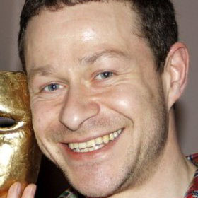

Foreword
With controversy comes important questions. Some have asked whether our test would implicitly condone drug use, and this has allowed for a fascinating exploration into the moral implications of harm reduction. Consequently, we have become facilitators of a debate regarding the nature of responsible drug policy, which we believe is paramount to a city so stricken by drug use as the one we have come to know, love, and call home.
Internally, this debate is at once restraining and liberating: it constantly forces us to stop and reevaluate what should be the next step forward, as we attempt to balance seemingly disparate beliefs within our own group. Yet, by doing so, we come to learn so much about ourselves, as we uncover ingrained prejudices we never knew existed.
There are endless ways in which our narrative could unfold. Indeed, with each new chapter there will be an audience who stands and applauds with approval, and one which remains seated and scorns with discontent. Who will belong to which audience is difficult to say; however, one thing is certain: we are the authors, and it is our story to tell.
Interactive Timeline
-
From The White Board To The Wet Lab
In order to determine the focus of iGEM 2015, we participated in a week long sandpit where we brainstormed ideas. By the end of the week, we were left with three prospective projects: sound-sensitive "dancing" bacteria, wound detecting-plasters, and a heroin purity biosensor. Put to a democratic vote, the heroin biosensor pulled the majority; however, serious reservations remained widespread amongst the group.
From The White Board To The Wet Lab
In order to determine the focus of iGEM 2015, we participated in a week long sandpit where we brainstormed ideas.
-
A Chat With Policy Experts
We sat down with Susan Deacon, former member of the RSA Commission on Illegal Drugs, Communities and Public Polic, and Doctorial Researcher Anna Ross for interviews regarding the current climate of UK drug policy. See how their input changed our project.
-
Synenergene Collaboration
We were fortunate enough to be selected as one of eight teams worldwide for a grant and collaboration with the EU project Synenergene. See how they helped us build a theoretical framework for the real-world implimentation of our biosensor.
-
The Morality of our Biosensor
Some object to our biosensor on a more abstract level, arguing that it is morally reprehensible because it implicity condones drug use. We talked to Dr David Levy, lecturer of ethics, to see whether this concern carries any weight.
-

Understanding Our End Users
We went to Serenity Cafe, which hires recovered and recovering heroin addicts. Serenity's owner, Yanni Yannoulis, shared his reservations about the usefulness of our biosensor for heroin addicts. See how we adapted our device in response to his advice.
-
Understanding Our End Users pt2
In order to determine the usefulness of our device for MDMA users, We chatted to King College London's Dr Adam Winstock, author of the world's largest drug survey, 'Global Drug Survey (2015)'. See how his invaluable insight lead to hardware being intregrated with our biosensor.
-
More to Come